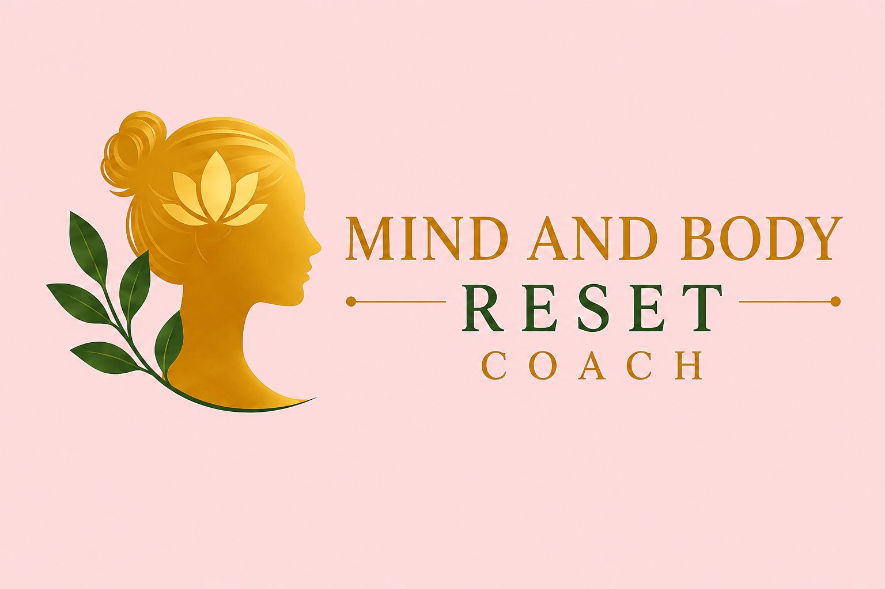

Finding Peace and Control with Late-Night Snacking
For many of us in midlife, the evening hours can feel like a battleground. We find ourselves caught in a "mental food fight"—that exhausting tug-of-war where one part of our brain demands we "be good" and "stay strong," while the other side is fixated entirely on the cookies in the pantry.
If you are between the ages of 40 and 60 and find yourself in this nightly stand-off, please know this: it is not a lack of willpower.
During these years, our bodies navigate significant hormone shifts and increased stress levels. These changes make our nervous systems incredibly sensitive. When we impose restrictive rules on ourselves, our brains no longer see them as "healthy choices"; they perceive them as threats. This triggers "food noise"—that persistent, intrusive chatter about food that grows louder and more demanding the more we try to ignore it.
We have been taught that self-discipline is the key to health, but for the midlife nervous system, the "more rules" approach is actually the fuel for the fire. When we label foods as off-limits or strictly limit our intake, our brain mistakes that restriction for a signal of danger.
True metabolic and mental calm begins long before the sun goes down. When we undereat during the day, we inadvertently make food obsession worse. To prevent our bodies from entering "survival mode," we must proactively fuel ourselves.
When a late-night craving strikes, it often feels like an emergency that requires an immediate reaction. We can break this cycle by creating psychological space between the urge and our action.
By naming the experience, you become an observer of the urge rather than a victim of it. You are acknowledging the signal without being obligated to obey it.
The "Food Courtroom" is the internal habit of judging our choices and labeling foods as "good," "bad," or "forbidden." This judgment keeps our brains in a scarcity mindset. When we tell ourselves we "shouldn't" have something, that food becomes a "scarce resource" in our minds.
To find peace, we must "legalize" all food. Moving from a mindset of "I can't have that" to "I can have that, but do I want it?" creates a profound sense of safety for the body and mind. This safety allows the "food noise" to quiet down.
When you feel the urge to snack, use this tactical three-step protocol to move from autopilot to intentionality:
Lasting transformation in midlife does not come from more restriction, more rules, or more shame. It comes from building a foundation of self-trust and safety. Real change happens in those small, intentional moments at night when you choose to listen to your body rather than fight it.
By choosing "better than perfect" and focusing on nourishment and nervous system calm, you can move away from the "mental food fight" and into a place of lasting peace and control.
If you're tired of fighting food and your body, you don't have to do it alone. Book a 1:1 coaching session today to start your journey toward lasting food freedom.
Book Your Coaching Session